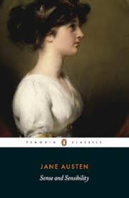

My Thoughts
I finished this book both irritated and satisfied — which may be the highest compliment one can pay Austen. She does not comfort blindly; she corrects. At 27, I see more of myself in Elinor than I once would have admitted. And perhaps that is the novel’s final triumph: it matures with the reader.
Rating
5 stars
Reflection
Reading Sense and Sensibility as an adult is infuriating in the most illuminating way. The novel is not merely about two sisters; it is about emotional responsibility. Elinor embodies restraint, duty, and the invisible labour of being the reliable one. She absorbs disappointment without spectacle. She saves the day repeatedly. She sits at sickbeds. She manages crises. And for much of the novel, no one saves her. Marianne embodies unfiltered feeling, romantic idealism, and the danger of confusing intensity with depth. She feels everything loudly — and must learn that constancy is rarer than passion. What makes the novel extraordinary is that Austen does not mock either disposition. She refines them. The men are deeply human — flawed, inconsistent, occasionally cowardly. Edward hides truth. Willoughby dazzles and retreats. Colonel Brandon persists. None are caricatures; all are choices. Two hundred years later, the patterns remain recognizable. The secrecy. The grand gestures without substance. The social maneuvering. The emotional labour of women holding everything together. And yet — the novel is not cynical. It insists that integrity matters. That restraint is not weakness. That growth is possible. That quiet goodness will, eventually, be acknowledged.